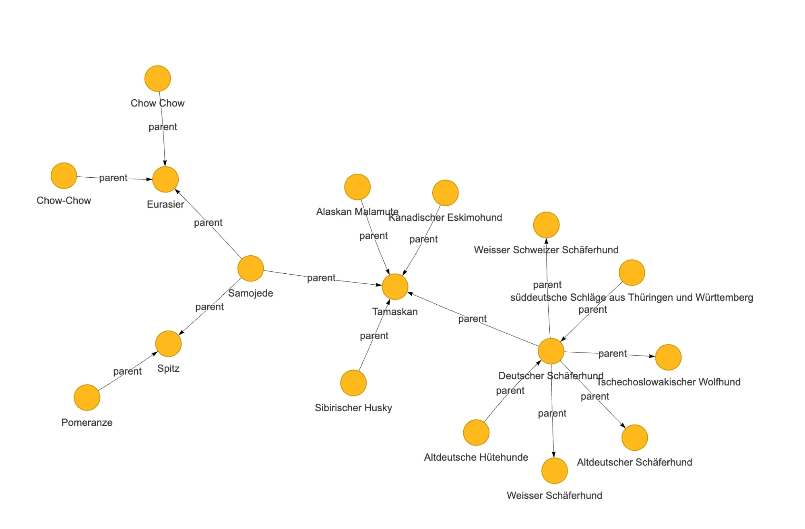
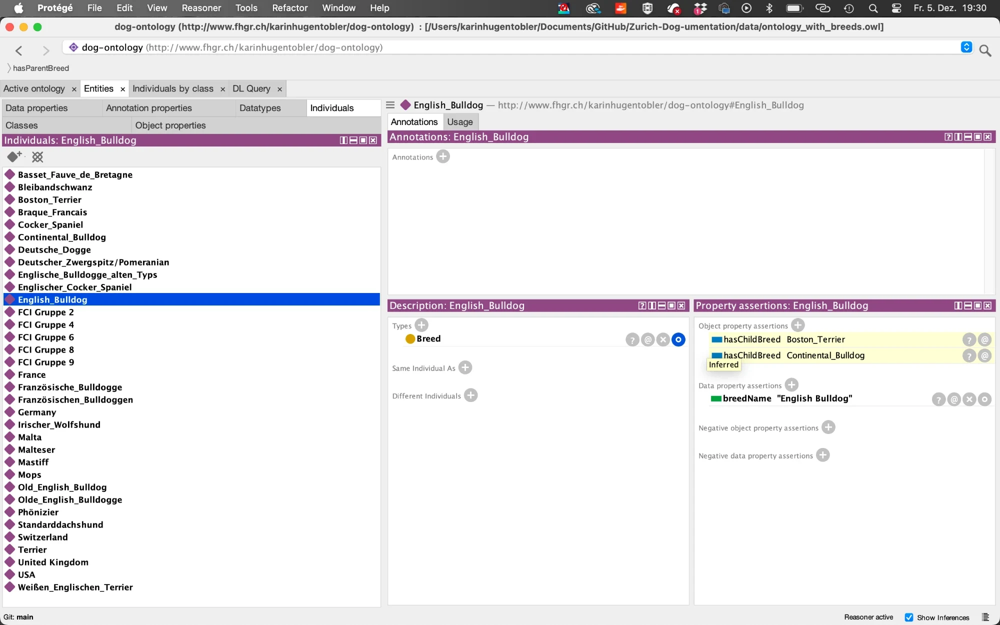
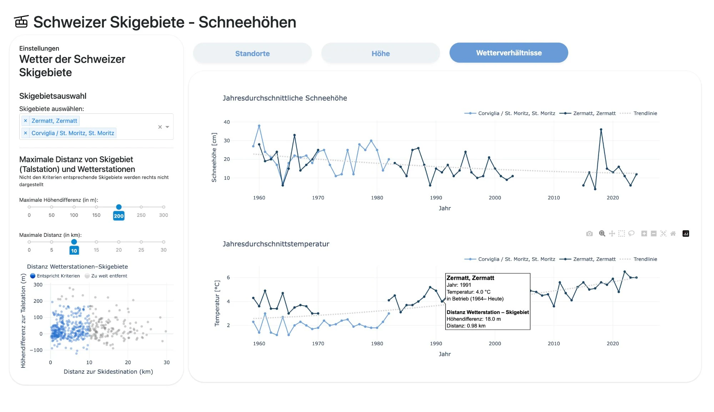
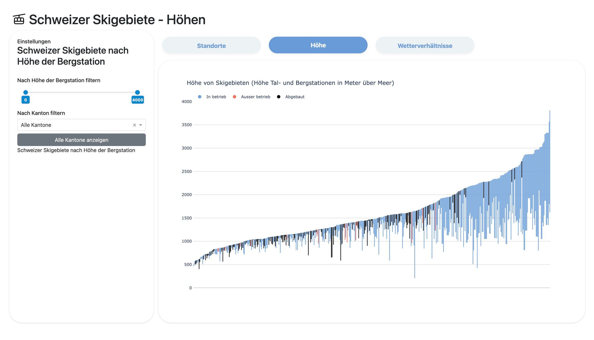
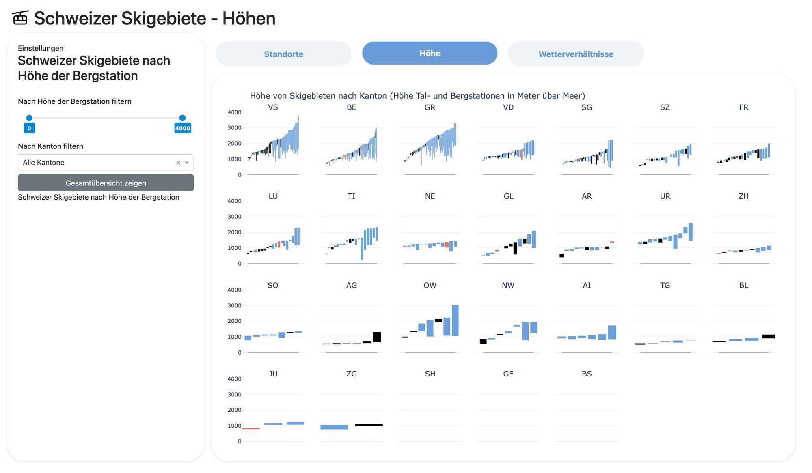
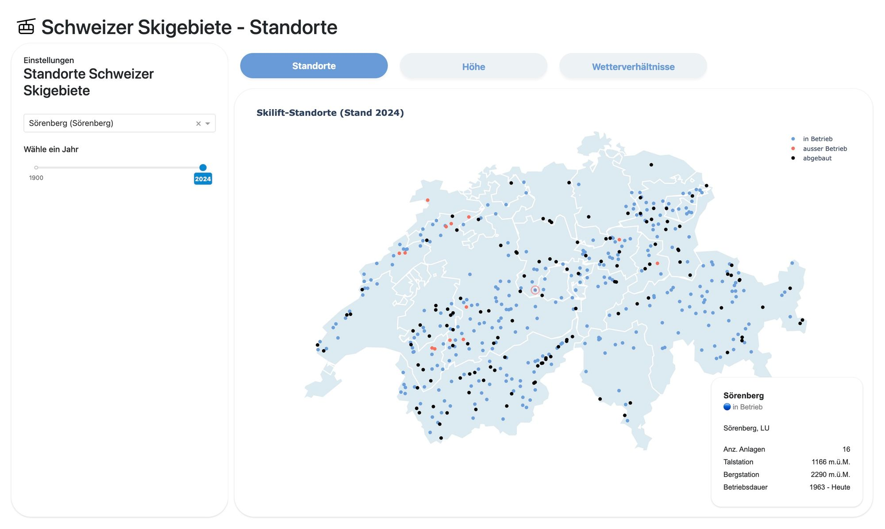
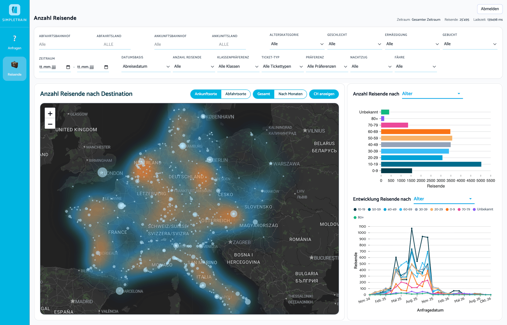
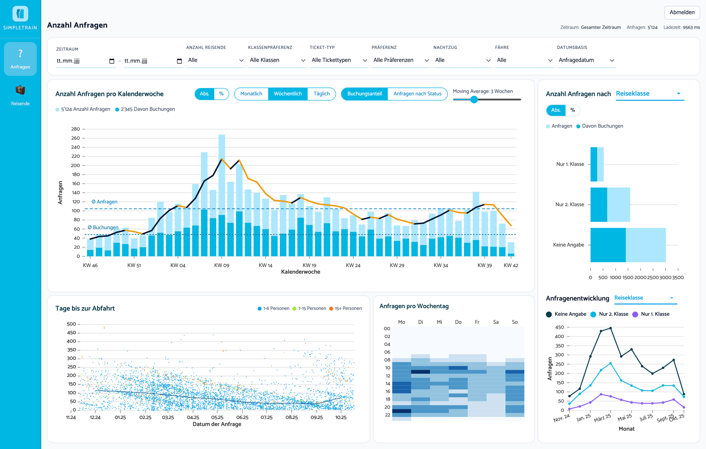
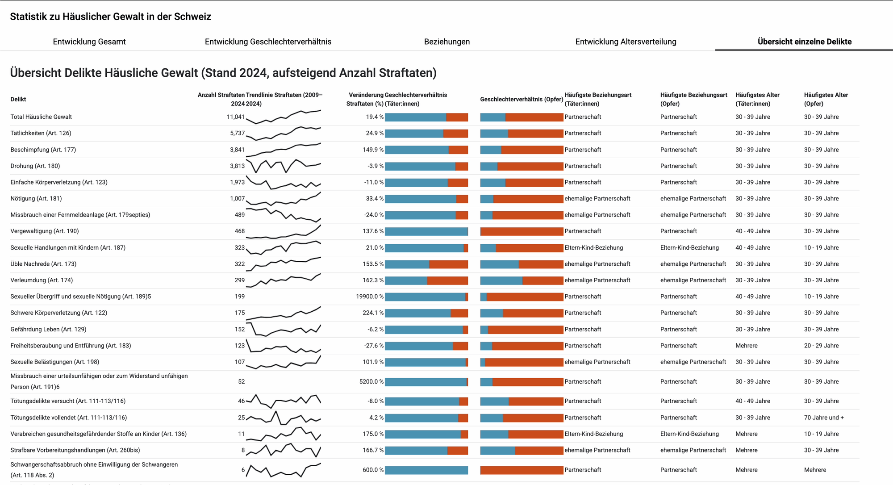

Foto
Enriching Zurich’s dog register with DBpedia/Wikipedia knowledge (breed size, origin, type) to explore paw-terns. SPARQL/RDF knowledge extraction combined with Streamlit.
Main challenge: matching the breed names in the register (in German, abbreviated or mixed breeds) to the right entries in DBpedia and Wikipedia.
Solution: using an LLM to clean up the breed names, fill in the gaps and match them to the right entries.

Breed relationships from the ontology: which breeds descend from which (hasParentBreed).

The ontology in Protégé: breeds, FCI groups and countries are linked, so a reasoner can infer further relationships – e.g. which breeds are child breeds of the English Bulldog.
Analysing patterns in closed and decommissioned Swiss ski lifts in relation to weather and climate data, built with Dash.
Main challenge: bringing together lift and climate data that differ in location, time span and resolution, and showing altitude in a way that is easy to compare.
Solution: letting users decide how closely a weather station has to match a ski lift (maximum distance and difference in altitude), and openly showing the gaps in the data.




Connecting and visualising the SimpleTrain database, built with Python, FastAPI, React and Plotly (images show dummy data).
Main challenge: getting a feel for the data and combining different points of view for different use cases.
Solution: separate views, each with its own focus, such as how requests develop over time for the team, or where travellers go for marketing, tested regularly with the team.


Statistics on domestic violence in Switzerland, built with Dash.
Main challenge: many offences with figures over several years, which quickly becomes hard to grasp.
Solution: an overview table with small charts for each offence, so you get the big picture at a glance.
